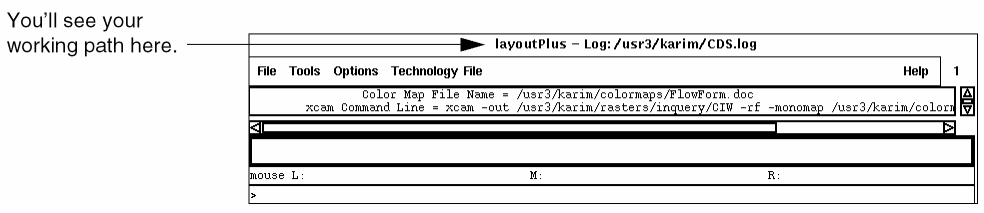
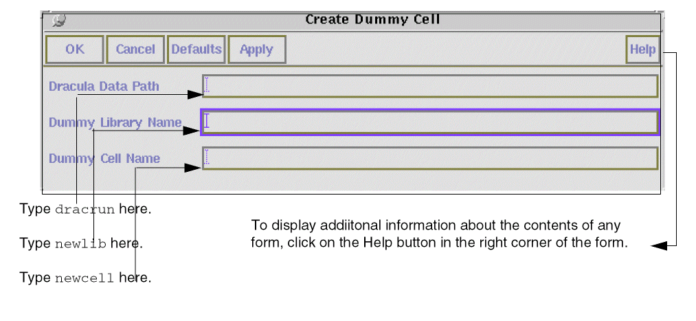
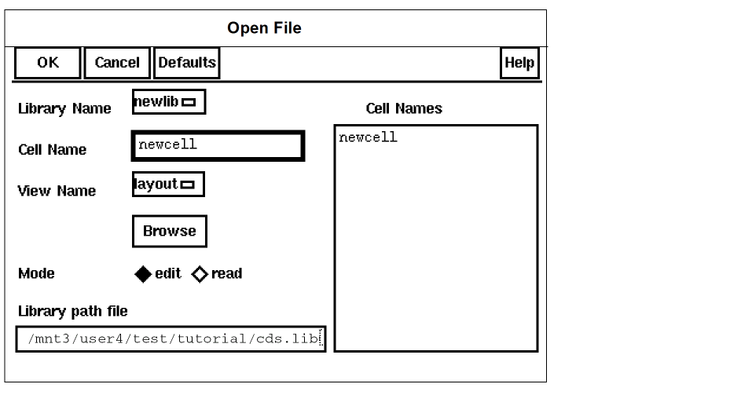
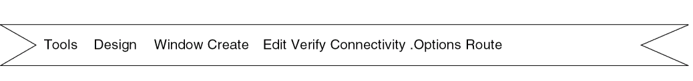
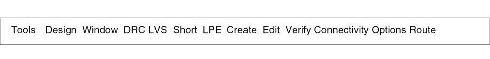

1
Getting Started
This chapter deals with the basics of getting started with the Dracula® graphical user interface which belongs to the Dracula group of physical verification and analysis products.
The Dracula graphical user interface's executable in the IC 5.1.41 and IC 6.x releases is called draculaInteractive. You can access its functionality in standalone mode or via a DFII session. The Cadence® design framework II software refers to it in its user interface as the Dracula Interactive product. Refer to the previous versions for information on this product’s former names.
.This chapter discusses the following topics:
- “About the Dracula Graphical User Interface”
- “How to Use This Tutorial”
- “Preparing to Start the Dracula Graphical User Interface”
About the Dracula Graphical User Interface
When you use the Dracula® product to check whether you wrote your design rules correctly or to find and fix Dracula errors in your layout, the results can be difficult to analyze. One way to find Dracula Design Rule Checking (DRC) or Layout Versus Schematic (LVS) errors is to overlay the Dracula results on your layout and zoom in on each error manually. The problem with this method is that errors can be hard to see and keep track of, particularly in a dense layout. There is no way to access specific errors automatically.
The graphical user interface helps solve this problem. With the graphical user interface commands, you control which Dracula verification errors you want to see. You can cycle through errors automatically while the graphical user interface keeps track of the errors you’ve seen. When you use the graphical user interface to find and keep track of Dracula verification errors, you can resolve errors faster.
To correct Dracula errors in your layout, you can use the graphical user interface with your layout data to locate these errors. The graphical user interface works with any system that you use to create your original layout data. If you use the Virtuoso® layout editor, you can display both the layout and Dracula error files in the the graphical user interface window. If you use a layout tool other than the Virtuoso layout editor, you need to open the layout window separately from the graphical user interface window.
To verify the rules in your command file, you do not need to display the layout data. In this case, you use the graphical user interface to determine whether you wrote the rules correctly and whether Dracula flagged the errors as you intended.
This tutorial shows you how to use the graphical user interface to identify and display DRC and LVS results.
How to Use This Tutorial
In this tutorial, you will learn how to
- Display DRC errors in a flat design
- Display DRC errors in a hierarchical design
- Display and analyze LVS errors
- Display parasitic resistance and capacitance (RC)
Start with “Preparing to Start the Dracula Graphical User Interface”. This section helps you learn how to set up the software you will use in each of the DRC and LVS chapters.
After you set up the software, you can work through the chapters in this tutorial in any order.
Preparing to Start the Dracula Graphical User Interface
To do this tutorial, you need to copy the sample files to your own directory. Once you’ve copied the files, you’ll start the software and open an empty cell.
In this chapter, you’ll learn how to
- Copy the sample tutorial files
- Start the Cadence software
- Use the Command Interpreter Window (CIW)
- Use forms and menus
- Create an empty cell in which you can display data in the graphical user interface
- Open the empty cell
Copying the Sample Files
To perform the steps in this tutorial, you must use the tutorial files. The files you need to run the tutorial are in the directories dracrun and drchier. The paths to the directories are shown in the table below. If the dracrun and drchier directories are not there, contact your Cadence sales representative or customer support person.
Before you start the tutorial, do the following:
-
Create a new directory called
tutorial. -
Create a new directory called
tutorial/dracrun. -
Create a new directory called
tutorial/drchier. -
Create a new directory called
tutorial/dracrc. -
Change your working directory to the
tutorial/dracrundirectory. -
Copy the
dracrunfiles into thetutorial/dracrundirectory. -
Change your working directory to the
tutorial/drchierdirectory. -
Copy the
drchierfiles into thetutorial/drchierdirectory. -
Change your working directory to the
tutorial/dracrcdirectory. -
Copy the
dracrcfiles into thetutorial/dracrcdirectory.
Now the tutorial files are ready for you to use them.
Starting Cadence Software
Each company has its own way to start Cadence software. Ask your system administrator how to log on and what command to type to start the software. If you have a Sun workstation, you also need to know how to start the X Window System software. Once you have this information, follow these steps.
- Log on to your system.
- If you have a Sun workstation, start the X Window System software. If you have a different workstation, go on to the next step.
-
Type your command for starting Cadence software at the system prompt.
In a few moments, you’ll see the Command Interpreter Window (CIW). The Cadence® design framework II commands are located on menus at the top of the CIW, as shown.

Using the CIW
The CIW is the control window for the Cadence software. The following figure shows the parts of the CIW.
Window title displays the Cadence executable name and the path to the log file that records your current editing session. The log file is in your home directory.
Menu banner lets you display command menus to access the graphical user interface.
Output area displays a running history of the commands you run and their results. For example, it displays a status message when you open a library.
Input line is where you type in SKILL expressions or enter numeric values for commands.
Prompt line reminds you of the next step during a command.
Using Forms and Menus
Most of the menus you use in the Cadence software are pull-down menus. Pull-down menus appear at the top of a window. You click the left mouse button on a menu title to “pull down” the menu and see the commands on it. The pull-down menus are the primary place to find commands.
Three dots (...) follow some commands. These dots mean that a “form” appears after you click on the command. Many commands have forms you use to provide additional information.
To use the following form banner buttons, you click on them with the left mouse button.
Using the Mouse
In this tutorial, “click left” means to press and release the left mouse button. If you need to click on a different mouse button, it will always be specified.
When you are asked to “select” commands from a menu, you click the left mouse button on the main menu, then on the command.
For example,
“Select
Library Manager from the Tools menu” means to click the left mouse button on Tools to display the menu, then click the left mouse button on Library Manager.
When you are asked to “double click,” you click the mouse button twice without moving it.
Starting the Standalone Dracula Graphical User Interface
Instead of starting the Cadence layout software, you can start the standalone Dracula graphical user interface by typing the following command at the UNIX command line:
draculaInteractive &
Creating an Empty Cell
Before you can display the sample Dracula data for this tutorial, you need to create an empty or “dummy” cell in which to put the data. The empty cell lets you access the graphical user interface menu commands. You use the same empty cell in each chapter of this tutorial. You need to create the empty cell only once.
-
In the
tutorialdirectory, start the Cadence CIW or the Standalone Dracula graphical user interface window. -
To display the Create Dummy Cell form of the graphical user interface, do one of the following:
-
In the CIW, type
iqCreateDummyCelland press Return. -
In the Dracula graphical user interface window, click on the menu command Utility – Create Dummy Cell.
The Create Dummy Cell form appears. -
In the CIW, type
-
In the form, type
dracrunand the names of the new library and new cell.
 -
Click left on OK.
After a few seconds, the form disappears and a message appears in the CIW to tell you that the cell was created successfully. Now that you’ve created the empty cell, you can open it and access the graphical user interface commands.
Opening the Empty Cell
To open the new empty cell you created, you’ll use the Library Browser.
-
In the CIW, select
.
The Open File form appears.
 -
From the Library Name menu, select newlib.
The Open File form is completed whennewcellappears in the Cell Name field. -
To open
newcell,in the Open File form, click OK.If you select a menu accidentally, click anywhere outside the menu to close it. If you select a command accidentally, click onThe graphical user interface window that displays the empty cell opens in edit mode, which means you can edit the cell. You will use this cell to display Dracula data. The menu banner in the empty cell looks like this:Cancelin the command form to cancel the command.
 -
From the menu banner, select Tools – Dracula Interactive
.
You use the left mouse button to select menus and commands.
The menu banner changes to display the graphical user interface menus. Except for the new menus, the Dracula graphical user interface window does not change.
Now you are ready to start any of the DRC, LVS, or LPE chapters.
Reopening an Empty Cell
At some point, you might want to close the windows and quit the tutorial. To resume the tutorial later, you can reopen the dummy cell as follows.
-
In the CIW or the graphical user interface window, click on File – Open
. -
When the Open File form is displayed, select
newlibfrom the Library Name menu. -
Be sure that
newcellis displayed in the Cell Name field. - In the Open File form, click OK.
-
When the design window is open, from the menu banner, select Tools – Dracula Interactive.
Now that you’ve got your dummy cell open again, you’re ready to resume working through the tutorial.
Return to top